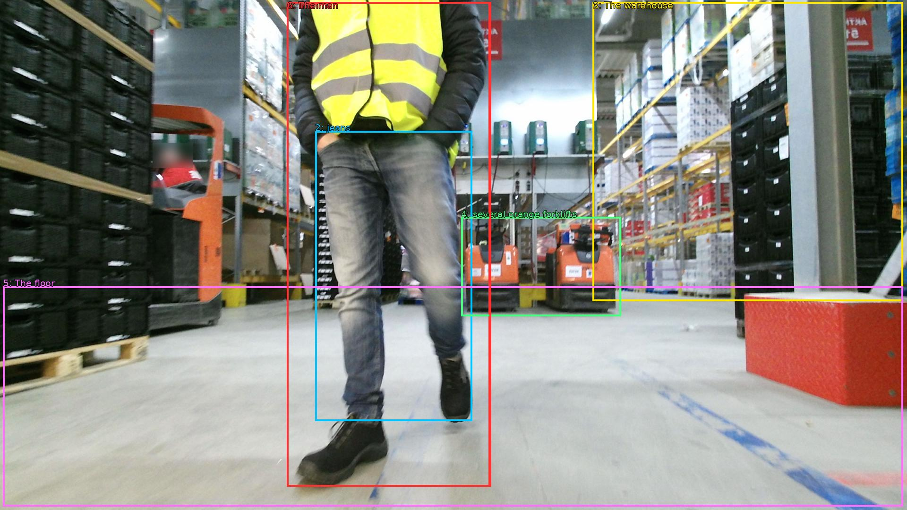

The image shows a man walking in a large warehouse. He is wearing a yellow high visibility vest, blue jeans, and black shoes. He appears to be in motion, as he is walking towards the right side of the image. The warehouse is filled with shelves and racks, and there are several orange forklifts in the background. The floor is made of concrete, and the walls are painted a light blue color. The man is walking with purpose, and his body is slightly blurred, suggesting that he is moving quickly.

Original · Caption raw · Grounding raw · Koordinate
Številke so lokalni ID regije. Dolge slikovne oznake so skrajšane; spodaj so celotne fraze. Napovedane regije se lahko prekrivajo ali opisujejo skupine.
| ID | Celotna fraza | bbox xyxy |
|---|---|---|
| 1 | man | [607.6799926757812, 4.860000133514404, 1037.760009765625, 1030.8599853515625] |
| 2 | jeans | [667.2000122070312, 277.02001953125, 999.3599853515625, 891.5400390625] |
| 3 | The warehouse | [1254.719970703125, 4.860000133514404, 1911.3599853515625, 637.7400512695312] |
| 4 | several orange forklifts | [976.3200073242188, 459.5400085449219, 1314.239990234375, 669.0599975585938] |
| 5 | The floor | [6.71999979019165, 606.4200439453125, 1911.3599853515625, 1072.9801025390625] |
| 6 | The man | [607.6799926757812, 4.860000133514404, 1039.679931640625, 1030.8599853515625] |